This guide is created and assembled by The Smackers for playing Counter-Strike 2 on a Desktop PC, follow this guide at your own risk.
We do not provide support or help for this guide. Don't attempt anything in this guide if you can't follow the steps exactly.
Windows 11
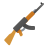
Windows 11 Preparation
Nothing special/different in Windows 11 so same practices before still apply like the below tips. A clean install is always better than updating to Windows 11
Backup all your data elsewhere always and enable System Restore and create a restore point after a fresh install or before completing this guide, just in case something unexpected happens
Create Restore Point
Search "restore point" in your Windows Search bar
Click Create a restore point
Select your C: drive then click Configure in the bottom right
Select Turn on system protection, then slide the bar to 10GB then click Apply and OK
Click Create and set a name for the Restore point, then click Create
Click Ok then restart PC
Check motherboard website for BIOS updates and apply a fairly recent stable one
Check in BIOS or Windows if XMP settings are (still) applied after update to Windows 11:
In Windows Search Bar type cmd hit Enter, then in the terminal window type: wmic memorychip get speed
In Windows Search Bar type control panel hit Enter, click Power Options if you're on a Desktop PC running Intel change power plan to either High Performance or Ultimate Performance if running AMD x3D chip best to leave it on Balanced
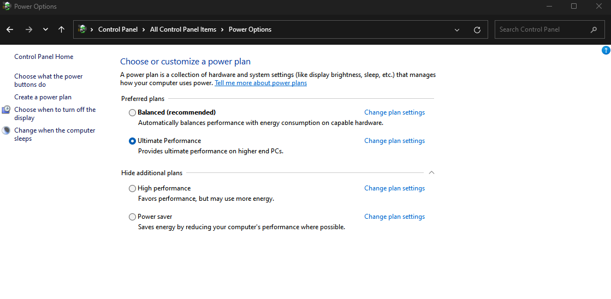
// End
Windows 11 Optimization
Open Task Manager, click Startup apps and set all apps to disabled unless actually want them starting with Windows
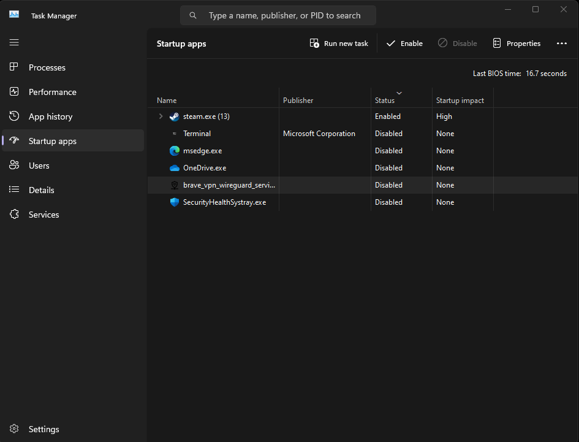
Open Task Manager, click Processes, compare to this image of how yours should look after
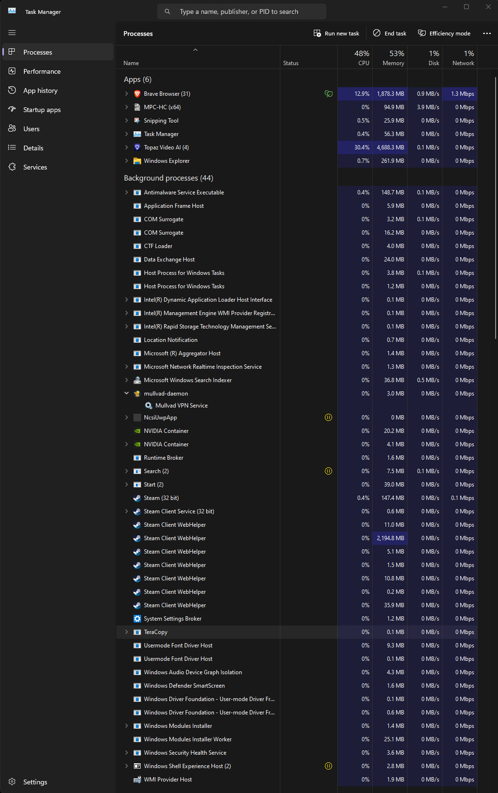
Open Windows Settings, click Gaming -> Xbox Game Bar and turn it Off
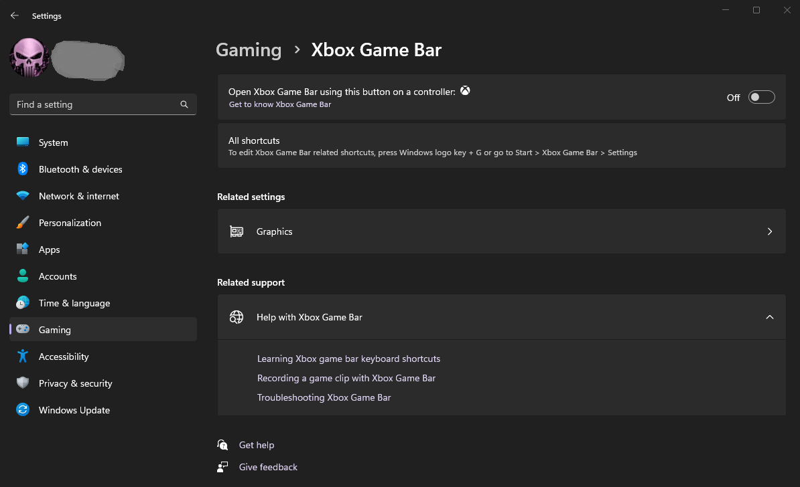
Restart Windows to complete
XMP Profiles
What is an XMP profile?
XMP or Extreme Memory Profiles, is an Intel technology and EXPO or Extended Profiles is AMD technology for Overclocking that allows you to change multiple memory settings by simply selecting a different profile, taking advantage of higher than standard memory speeds
If you’ve ever wanted to overclock your memory but didn’t want to fiddle with frequency, voltage and timings, this is the way to do it
Should I use an XMP profile?
In short, yes. All high-performance RAM use XMP profiles, because they all run above standard DDR industry specifications
If you don't enable XMP in your BIOS, they will run at your system's standard specifications that are dependent on the CPU you have and you won't take advantage of the higher clock speeds that your RAM may have
Check if XMP profile is already enabled?
In Windows Search Bar type cmd hit Enter, then in the terminal window type: wmic memorychip get speed
If it says 2133 for DDR4 or 4800 for DDR5 do the following step to enable XMP profile
How to enable the XMP profile?
This is normally done through the BIOS utility, refer to your motherboard documentation for specifics This link from GSKILL is a great reference guide for most motherboards
GPU Drivers
How to Install/Update NVIDIA GPU Drivers Correctly
Display Driver Uninstaller Setup (to cleanup any currently installed drivers)
Manually select a driver version and choose the latest 64 bit Desktop driver
Click Next and click Next again
Copy the settings like the images below on the Installation Tweaks screen then click Next (If you want GeForce Experience or ShadowPlay check those boxes)
Click Next and then click Install and wait for the installation to complete
WARNING:
Must use version 1.18 or newer
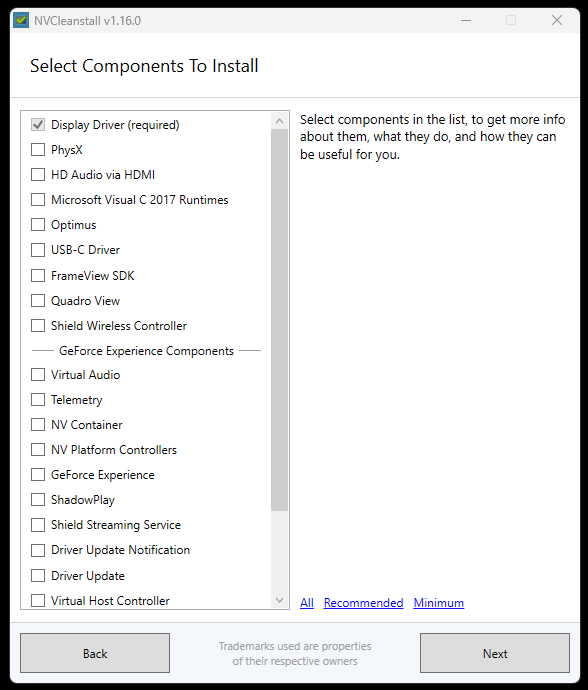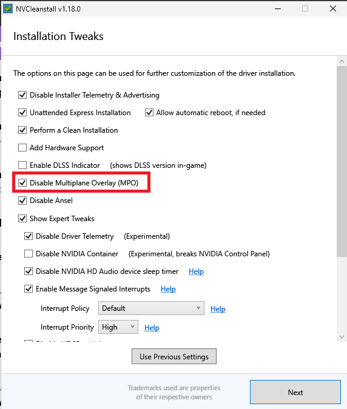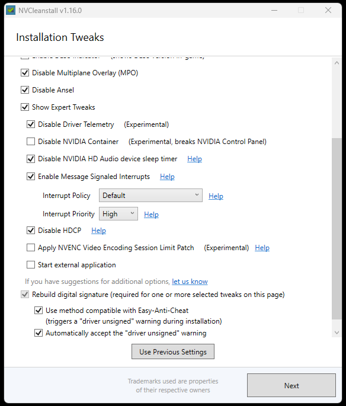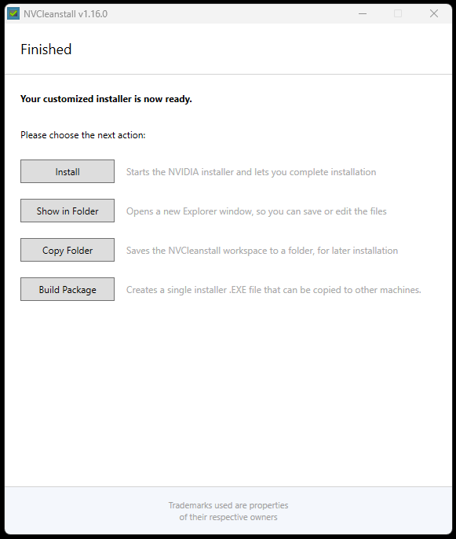
// End
Tweaking NVIDIA Control Panel
Right click Desktop and select NVIDIA Control Panel
Change resolution, select prefered resolution and highest available refresh rate
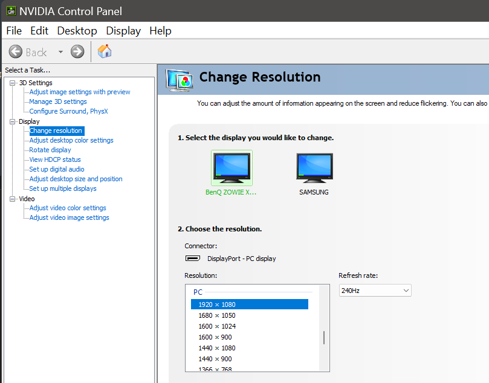
Manage 3D settings:Power management mode: prefer maximum performance Preferred refresh rate: Highest available
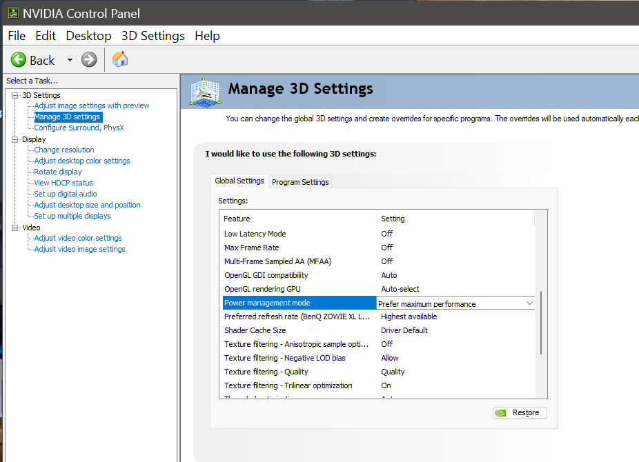
Adjust dekstop size and position:Aspect ratio if play Black Bars Full-screen if play Stretched No scaling if play Native
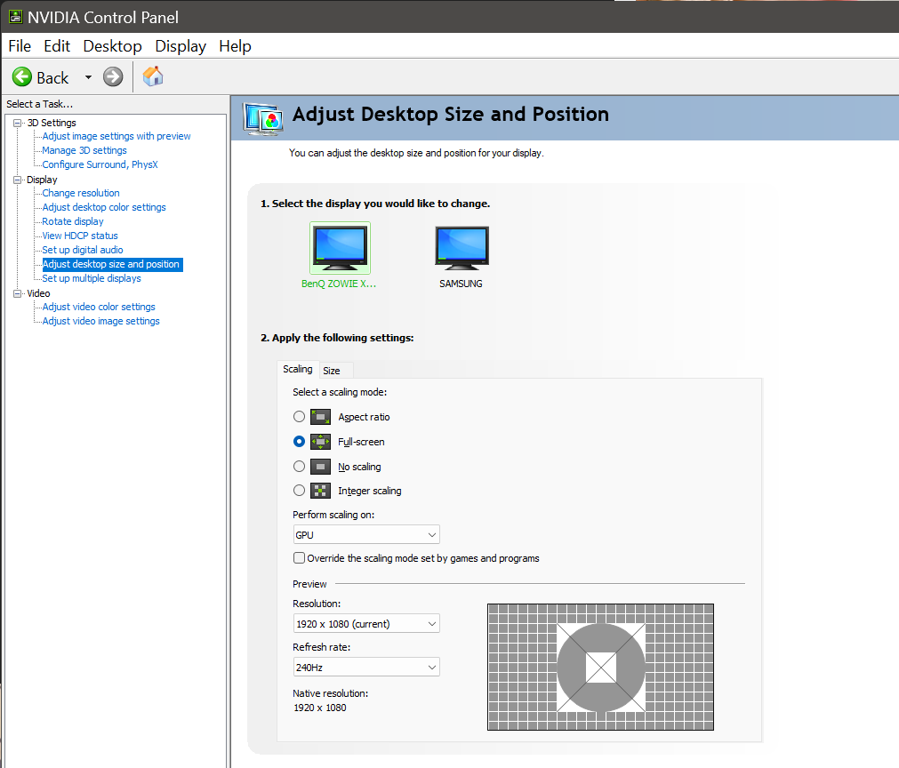
Perform scaling on: Display if want best input delay, sharp video, alt-tab is slow
Perform scaling on: GPU if want best smoothness, less sharp video, alt-tab is instant
// End
Install AMD Driver
Use AMD's installer and choose minimal or full
Windows 10/11 Cleaning
Windows 10/11 Cleaning
1. Open Windows explorer (a folder) then highlight the text in address bar and delete it, then paste/type there:
C:\Windows\Temp
and hit Enter
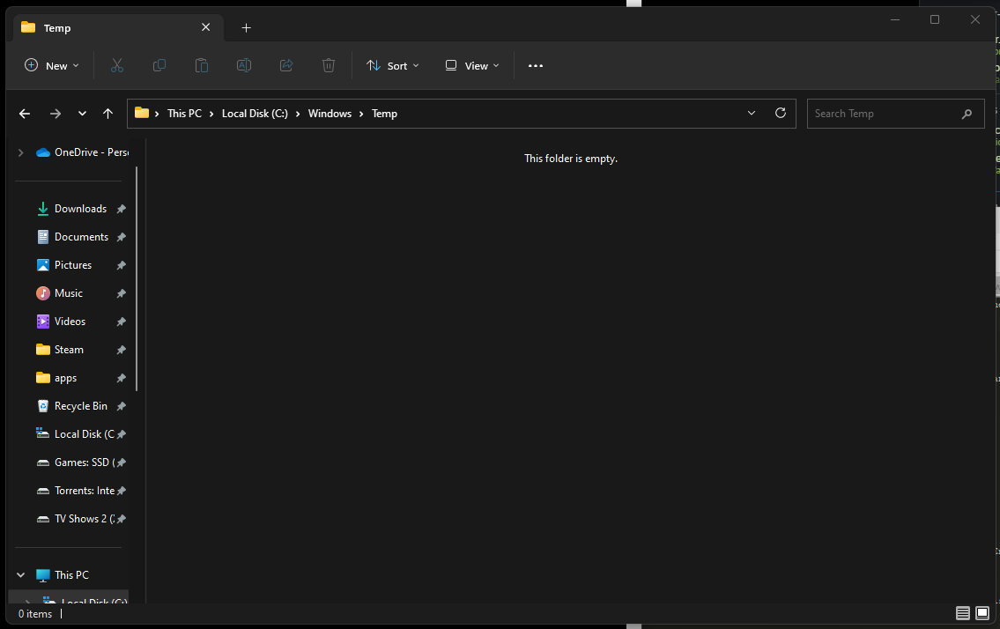
Click okay if asked for Admin privileges
Select all files in the folder by pressing CTRL+A on your keyboard after selecting a random file
Press your Delete key
Do this for all current items box and click Skip
Some items may not delete, this is fine, move on
2. Open Windows explorer (a folder) again then highlight the text in address bar and delete it, then paste/type there:
%temp%
and hit Enter
Select all the files in the folder by pressing CTRL+A on your keyboard after selecting a random file
Press your Delete key
Tick the Do this for all current items box and click Skip
Some items may not delete, this is fine, move on
3. Disk cleanup
In Windows Search Bar type: cleanmgr hit Enter
Select C drive and press OK
Tick every box and press OK and then click Delete Files (Warning: this will delete your image and video thumbnails and anything in your Recycle Bin)
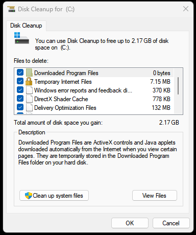
4. Clean up system files
In Windows Search Bar type: cleanmgr hit Enter
Click Clean up system files
Choose what you want to clean, most people do everything
Click OK this process might take a bit longer, be patient
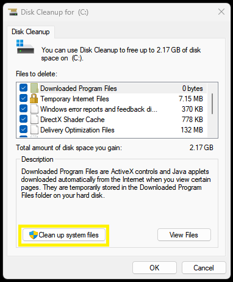
Faceit AC / Valorant AC Requirements
These things are needed for running Faceit AC or Valorant AC in Windows 11
Open and login to Faceit AC and see if it gives you a notice/warning to be able to play, you may get this warning
1. Enable Secure Boot and TPM in ASUS & MSI Motherboards:
Check TPM status in Windows 11: 0:31
MSI Motherboards - Disable CSM and Enable Secure Boot: 2:58
MSI Motherboards - Enable TPM: 3:53
ASUS Motherboards - Disable CSM and Enable Secure Boot: 5:25
ASUS Motherboards - Enable TPM: 7:13
Confirm TPM status in Windows 11: 8:35
IMPORTANT Also the 1st video doesn't show it but your Windows drive must be formatted GPT not MBR or it won't boot, yours probably is good but the 2nd video shows you how to check
2. Enable Secure Boot and TPM in Gigabyte Motherboards:
How to check if your drive is formatted in MBR or GPT: 00:36
How to convert your drive from MBR to GPT: 01:36
How to check if you have TPM / Secure Boot Enabled: 03:35
How to Enable Secure Boot and TPM on AMD BIOS: 04:42
How to Enable Secure Boot and TPM on Intel BIOS: 07:50
NOTE If you are using BitLocker Drive encryption you must research how to safely do all of the above on your own
PC Stuttering Fix
Easy Fix for PC Stuttering in games (GameBar Presence Writer)
Start the game you wish to play and then open the Task Manager and locate the process Gamebar Presence Writer
Right click it and End the process and enjoy your game
Resizable BAR
Enable Resizable BAR for NVIDIA 2000/3000/4000 Series GPU
If your system has these components or anything newer rBAR should be supported (google your cpu, motherboard and gpu to see if supported)
Intel CPU: 10th, 11th, 12th, 13th series and newer
AMD CPU: AMD Motherboard: 300 series(bios update), 400, 500, 600 series and newer
NVIDIA RTX 3000 series or newer
AMD Radeon RX 5000 series or newer with unofficial patch: RX 500 series/Vega56,64/Radeon VII
You should have a relatively up to date BIOS, back up your data as per usual
What is Resizable BAR?
All gaming PCs produce an on-screen image by way of the CPU processing data, textures, shaders and the like, from the graphics card’s frame buffer. Usually the CPU can only access this buffer in 256MB read blocks, which obviously isn’t very much when modern GPUs regularly have 8GB of video memory or much, much more.
Resizable BAR essentially makes the entirety of the graphics frame buffer accessible to the CPU at once; where it could once sip, it now guzzles. The idea is that once textures, shaders and geometry are loading in faster, games should run faster with higher frame rates.
This video explains everything if you wish to learn more.
Confirm Resize BAR state with NVIDIA Control Panel
1. Right click of mouse and select [NVIDIA Control Panel]
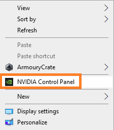
2. Click [Help] option and then click [System Information] option
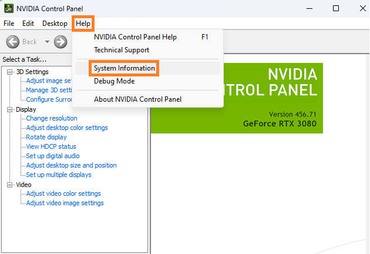
3. Resizable BAR show Yes means enabled
If it does not say Yes you must enable it in the BIOS.
Enabled Resize BAR in BIOS setup
(For example：TUF GAMING X570-PLUS(WI-FI))
1. Power on the system and press <delete> key to enter BIOS [EZ Mode]
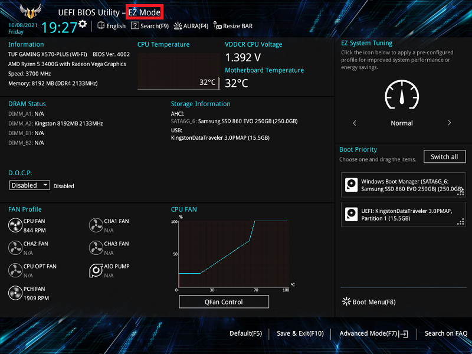
2. Click Resize BAR icon and set to [On]
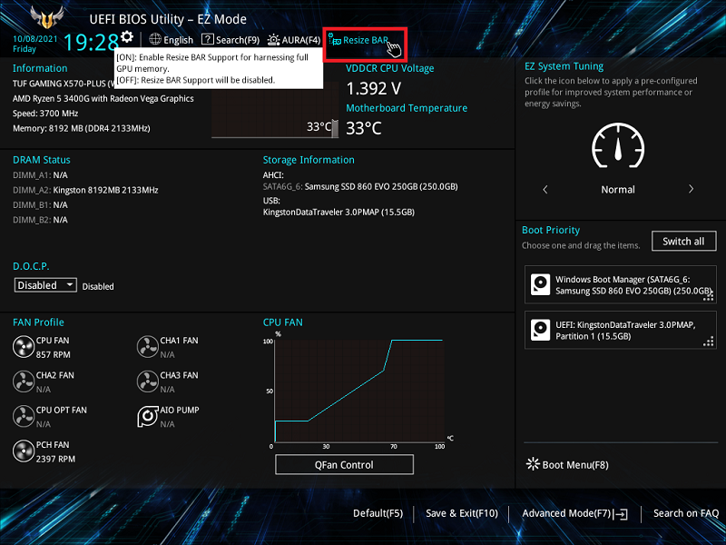
3. Press <F10> key and click <OK> , the system will auto reboot
You Must Also Now Enable Resize BAR using NVIDIA Profile Inspector
Download and extract the latest NVIDIA Profile Inspector (nvidiaProfileInspector.zip) to a folder you can find
Open nvidiaProfileInspector and scroll down to section 5 - Common and change the 3 rBAR options like the image below
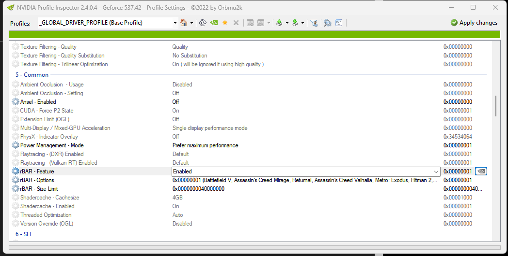
Then click Apply Changes top right
This profile that's saved is the Global Profile, if you wish to disable rBAR you can do it on a per game basis by clicking on the Profiles drop down at top left
// End
Enable Resizable BAR/Smart Access Memory for AMD Series GPU
step 4
step 2
step 0
Counter-Strike 2
Counter-Strike 2 Optimizations
Nothing different in CS2 compared to CS:GO other than there's no need to have many Launch Options
Most people should leave Launch Options empty however you may want to add the following:
-noreflex -threads X -allow_third_party_software
-noreflex : Provides smoother frametimes and slightly higher 1% lows. Works best when used in conjunction with FPS Cap. Source: @fREQUENCYCS on X
-threads X : Set this to the number of cores you have, plus 1. For Intel CPU, 12900K, 13900K, 14900K, set -threads 9. For AMD CPU, 7800X3D, set -threads 9. The performance benefit of this is more noticeable on Intel than it is on AMD. Source: FPS Heaven
-allow_third_party_software : Allows compatibility with OBS and other third-party applications.
To set Launch Options, right click on CS2 in your Steam Library, select Properties, then General and paste one, two or all three of the above options in the Launch Options box
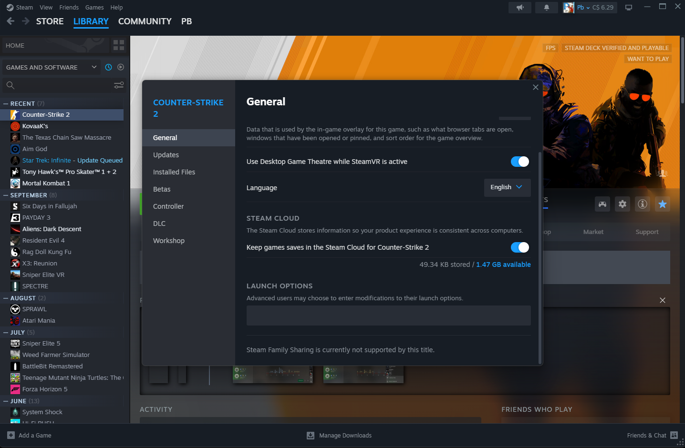
If updated from CS:GO to CS2 an uninstall and install of CS2 is recommended, backup settings/binds/configs already elsewhere as uninstalling may remove them
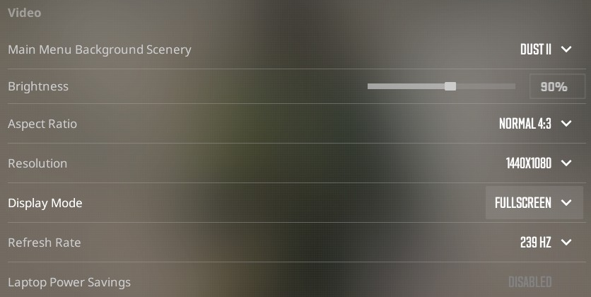
Make sure you set your maximum refresh rate of your display in the Video settings
// End
FPS Cap
In this next step, we'll be implementing an FPS cap, which will significantly improve your frame times, and 0.1%, and 1% lows. In practice, this leaves your game feeling smoother than it otherwise would be with unlocked FPS. To do this, we'll be using the integrated NVIDIA driver FPS cap. For best results, use FPS Cap in conjunction with the -noreflex launch option.
Open the NVIDIA Control Panel and navigate to Manage 3D Settings.
Click on Program Settings.
Find CS2 in the drop-down menu and select it. If you cannot find it, click Add and locate the CS2.exe executable from the Steam directory. It is normally located at: C:\Program Files (x86)\Steam\steamapps\common\Counter-Strike Global Offensive\game\bin\win64\cs2.exe
Scroll down and locate Max Frame Rate, then select a value.
Finding this value is relatively easy. Queue up for a competitive match and take note of your average framerate. Pick a value slightly below your average framerate, so for example, if you average 280 FPS, lock the framerate to 250 FPS. Take note of your new average FPS. This can take some trial and error, so if you're not happy with how things feel, increase/decrease the cap by 10 FPS at a time to try and dial it in.
Boost Player Contrast: Enabled - Enable for best visibility (contrast on enemies)
Wait for Vertical Sync: Disabled - Always disable vsync
Multisampling Anti-Aliasing Mode: 8X MSAA - Lower equals best performance/personal preference
Global Shadow Quality: High - High at least for best visibility (shadows on enemies)
Model/Texture Detail: Low - Lower equals best performance/personal preference
Texture Filtering Mode: Bilinear - Lower equals best performance/personal preference
Shader Detail: Low - Lower equals best performance/personal preference
Particle Detail: Low -
Ambient Occlusion: Medium - Medium at least for best visibility (shadows on enemies)
High Dynamic Range: Performance -
FidelityFX Super Resolution: Disabled(Highest Quality)NVIDIA Reflex Low Latency: Enabled - See section right below (Enabled = less FPS+improved latency)
There's a section called How to Measure Latency which can be used to figure out exactly if you should set this setting to Enabled, Enabled+Boost or Off.
Note: If you are using FPS Cap and -noreflex launch option, you should set NVIDIA Reflex to Disabled for optimal performance.
Most players just set it to Enabled
DISABLED - Bad PC Overall
ENABLED - Good CPU and GPU
ENABLED+BOOST - Bad CPU
// End
Creating a Counter-Strike 2 autoexec.cfg file
What is an autoexec.cfg?
An autoexec is basically a personal config file that you put in the game's files with your own personal settings (such as crosshair settings, buy binds, sensitivity, and so on)
so that the game automatically loads these settings each time you start up the game.
Let's create an autoexec.cfg
In Windows search bar type: folder options hit Enter, click the View tab and then uncheck Hide extensions for known file types, click Apply and OK
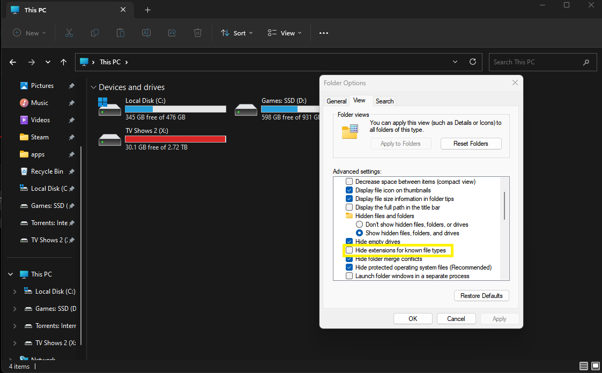
Now open Windows explorer (a folder) and browse to: C:\Program Files (x86)\Steam\steamapps\common\Counter-Strike Global Offensive\game\csgo\cfg
Right click and empty space in the folder and create a New -> Text Document, rename it to autoexec.cfg
Now open it with Notepad and put these lines: (this creates my personal autoexec config and which you may add or remove anything you wish later)
// start
cl_autohelp "0"
cl_invites_only_friends "1"
cl_radar_square_with_scoreboard 0
cl_use_opens_buy_menu "0"
con_enable "1"
gameinstructor_enable "0"
option_speed_method "1" // Setting this to 1 will enable toggling for your sprint key.
mm_dedicated_search_maxping "34" // (60 great, 100 good, 150 bad)
r_fullscreen_gamma "2.3"
//Sound volume controls
bind "pgup" "incrementvar volume 0 1 0.1;echo Volume +"
bind "pgdn" "incrementvar volume 0 1 -0.1;echo Volume -"
//Sensitivity
sensitivity ".95"
//Weapon aliases
// Pistols
alias deagle "buy deagle;give weapon_deagle"
alias p250 "buy p250;give weapon_p250"
alias pistols "glock;usp;dualies;fiveseven;deagle;p2k;tec9;p250;cz"
// Grenades
alias flash "buy flashbang;give weapon_flashbang"
alias smoke "buy smokegrenade;give weapon_smokegrenade"
alias he "buy hegrenade;give weapon_hegrenade"
alias fire "buy molotov; buy incgrenade;give weapon_molotov;give weapon_incgrenade"
alias decoy "buy decoy;give weapon_decoy"
// Gear
alias vesthelm "buy vesthelm"
alias vest "buy vest"
alias taser "buy taser 34"
alias gear "vesthelm;vest"
// End weapons
//Buy binds
bind "n" "buymenu"
bind "F1" "gear"
bind "F2" "smoke"fds
bind "F3" "flash"
bind "F4" "fire"
bind "F5" "he"
bind "F6" "decoy"
bind "F7" "buy rifle1"
bind "F8" "buy secondary2"
bind "F9" "buy defuser"
bind "F10" "buy secondary4"
bind "F11" "buy rifle4"
bind "F12" "taser"
// Binds
bind "z" "slot12" // healthshot // toggle xray in demo
bind "0" "slot10" // slot4 // molotov
bind "1" "slot1" // rifle
bind "2" "slot2" // pistol
bind "3" "slot3" // knife
bind "4" "slot7" // flash
bind "5" "slot5" // c4
bind "6" "slot6" // he
bind "7" "slot7" // flash
bind "8" "slot8" // smoke
bind "9" "slot9" // decoy
//Misc Binds
bind "MOUSE4" "+lookatweapon"
bind "INS" "toggleconsole"
bind "'" "+spray_menu"
//Nade Binds
bind "f" "slot8" // fast switches to smoke
bind "v" "slot6" // fast switches to HE
bind "b" "slot9" // fast switches to decoy
bind "t" "slot10" // fast switches to molotov
//In game comms:
bind "MOUSE5" "+voicerecord"
//My unbinds/fat fingers
bind "del" ""
bind "c" ""
bind "j" ""
bind "q" ""
bind "x" ""
bind "MWHEELUP" ""
bind "`" ""
bind "RSHIFT" ""
//Movement Binds
bind "w" "+forward"
bind "a" "+left"
bind "d" "+right"
bind "s" "+back"
bind "CTRL" "+duck"
bind "MWHEELDOWN" "+jump"
//jump throw grenades
bind "SPACE" "+jump"
bind "UPARROW" echo "map_workshop 3070244462 aim_botz"
// weapon_breachcharge
alias "+bombdrop" "slot3; slot5";
alias "-bombdrop" "drop";
bind "alt" "+bombdrop";
//Command Radio Message
bind "DOWNARROW" "holdpos"
// Maps
alias "aztec" "map de_aztec"
alias "cache" "map de_cache"
alias "cobblestone" "map de_cbble"
alias "dust" "map de_dust"
alias "dust2" "map de_dust2"
alias "inferno" "map de_inferno"
alias "mill" "map de_mill"
alias "mirage" "map de_mirage"
alias "nuke" "map de_nuke"
alias "overpass" "map de_overpass"
alias "seaside" "map de_seaside"
alias "season" "map de_season"
alias "train" "map de_tain"
alias "vertigo" "map de_vertigo"
host_writeconfig
Ctrl+S to Save file, then Ctrl+W to Close Notepad
// End
Counter Strike 2 Benchmark Results
Borderless Windowed versus Fullscreen mode: made no difference in fps, frametime or latency.
fps_max 1000 versus fps_max 0: made no difference in fps, frametime or latency.
1920x1080
Metric
Value
FPS
Avg=677.6, P1=283.3
PC Latency
4.0
FrameTime
Avg=1.48, P99=3.53
1440x1080
Metric
Value
FPS
Avg=736.3, P1=282.3
PC Latency
4.0
FrameTime
Avg=1.36, P99=3.64
1280x960
Metric
Value
FPS
Avg=743.4, P1=280.8
PC Latency
3.0
FrameTime
Avg=1.35, P99=3.56
1024x768
Metric
Value
FPS
Avg=764.9, P1=297.2
PC Latency
3.0
FrameTime
Avg=1.31, P99=3.36
CPU Affinity: Disable CPU 0
In the task manager, click the "Details" tab and right click on the game, then select "set affinity". In the Processor affinity window, uncheck CPU 0 and leave all other numbers checked.
1440x1080
Metric
Value
FPS
Avg=763.2, P1=293.7
PC Latency
4.0
FrameTime
Avg=1.31, P99=3.41
1024x768
Metric
Value
FPS
Avg=782.7, P1=316.5
PC Latency
3.0
FrameTime
Avg=1.28, P99=3.16
CPU Affinity: Disable CPU 0, Medal program running